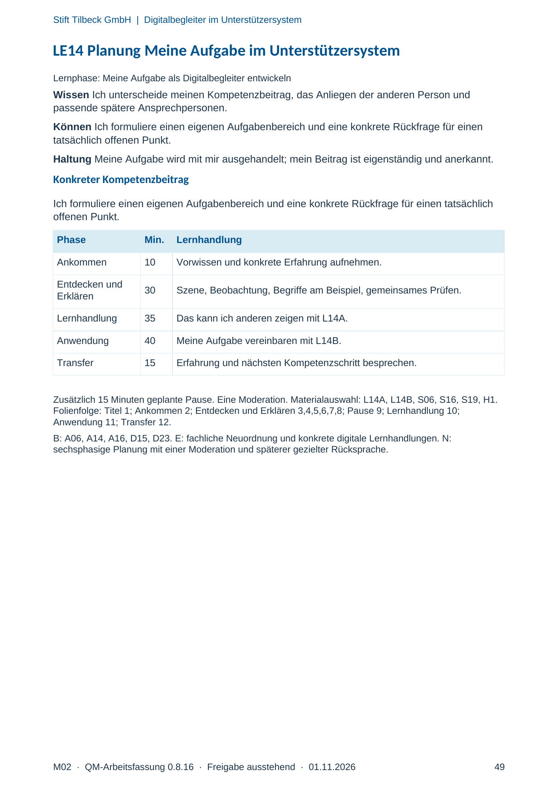
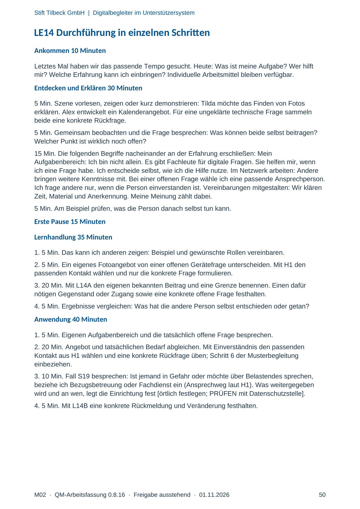
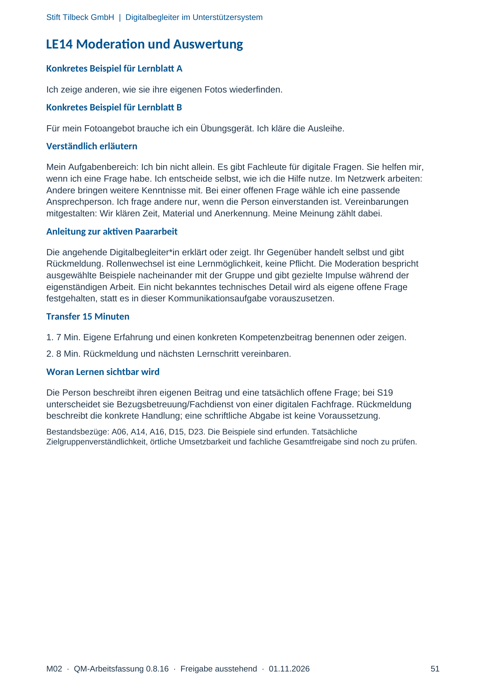

M02 · Originalseite 49, 50, 51
Handbuch und Muster
Gezielte Original-Druckauswahl.
Fragen und Ankreuzfelder werden auf dem Ausdruck bearbeitet. Die Lesefassung speichert keine Antworten.
Lesefassung · Seite 49
Stift Tilbeck GmbH | Digitalbegleiter im Unterstützersystem
M02 · QM-Arbeitsfassung 0.8.16 · Freigabe ausstehend · 01.11.2026 49
LE14 Planung Meine Aufgabe im Unterstützersystem
Lernphase: Meine Aufgabe als Digitalbegleiter entwickeln
Wissen Ich unterscheide meinen Kompetenzbeitrag, das Anliegen der anderen Person und
passende spätere Ansprechpersonen.
Können Ich formuliere einen eigenen Aufgabenbereich und eine konkrete Rückfrage für einen
tatsächlich offenen Punkt.
Haltung Meine Aufgabe wird mit mir ausgehandelt; mein Beitrag ist eigenständig und anerkannt.
Konkreter Kompetenzbeitrag
Ich formuliere einen eigenen Aufgabenbereich und eine konkrete Rückfrage für einen tatsächlich
offenen Punkt.
Phase Min. Lernhandlung
Ankommen 10 Vorwissen und konkrete Erfahrung aufnehmen.
Entdecken und
Erklären 30 Szene, Beobachtung, Begriffe am Beispiel, gemeinsames Prüfen.
Lernhandlung 35 Das kann ich anderen zeigen mit L14A.
Anwendung 40 Meine Aufgabe vereinbaren mit L14B.
Transfer 15 Erfahrung und nächsten Kompetenzschritt besprechen.
Zusätzlich 15 Minuten geplante Pause. Eine Moderation. Materialauswahl: L14A, L14B, S06, S16, S19, H1.
Folienfolge: Titel 1; Ankommen 2; Entdecken und Erklären 3,4,5,6,7,8; Pause 9; Lernhandlung 10;
Anwendung 11; Transfer 12.
B: A06, A14, A16, D15, D23. E: fachliche Neuordnung und konkrete digitale Lernhandlungen. N:
sechsphasige Planung mit einer Moderation und späterer gezielter Rücksprache.
Originalseite ansehen

Lesefassung · Seite 50
Stift Tilbeck GmbH | Digitalbegleiter im Unterstützersystem
M02 · QM-Arbeitsfassung 0.8.16 · Freigabe ausstehend · 01.11.2026 50
LE14 Durchführung in einzelnen Schritten
Ankommen 10 Minuten
Letztes Mal haben wir das passende Tempo gesucht. Heute: Was ist meine Aufgabe? Wer hilft
mir? Welche Erfahrung kann ich einbringen? Individuelle Arbeitsmittel bleiben verfügbar.
Entdecken und Erklären 30 Minuten
5 Min. Szene vorlesen, zeigen oder kurz demonstrieren: Tilda möchte das Finden von Fotos
erklären. Alex entwickelt ein Kalenderangebot. Für eine ungeklärte technische Frage sammeln
beide eine konkrete Rückfrage.
5 Min. Gemeinsam beobachten und die Frage besprechen: Was können beide selbst beitragen?
Welcher Punkt ist wirklich noch offen?
15 Min. Die folgenden Begriffe nacheinander an der Erfahrung erschließen: Mein
Aufgabenbereich: Ich bin nicht allein. Es gibt Fachleute für digitale Fragen. Sie helfen mir, wenn
ich eine Frage habe. Ich entscheide selbst, wie ich die Hilfe nutze. Im Netzwerk arbeiten: Andere
bringen weitere Kenntnisse mit. Bei einer offenen Frage wähle ich eine passende Ansprechperson.
Ich frage andere nur, wenn die Person einverstanden ist. Vereinbarungen mitgestalten: Wir klären
Zeit, Material und Anerkennung. Meine Meinung zählt dabei.
5 Min. Am Beispiel prüfen, was die Person danach selbst tun kann.
Erste Pause 15 Minuten
Lernhandlung 35 Minuten
1. 5 Min. Das kann ich anderen zeigen: Beispiel und gewünschte Rollen vereinbaren.
2. 5 Min. Ein eigenes Fotoangebot von einer offenen Gerätefrage unterscheiden. Mit H1 den
passenden Kontakt wählen und nur die konkrete Frage formulieren.
3. 20 Min. Mit L14A den eigenen bekannten Beitrag und eine Grenze benennen. Einen dafür
nötigen Gegenstand oder Zugang sowie eine konkrete offene Frage festhalten.
4. 5 Min. Ergebnisse vergleichen: Was hat die andere Person selbst entschieden oder getan?
Anwendung 40 Minuten
1. 5 Min. Eigenen Aufgabenbereich und die tatsächlich offene Frage besprechen.
2. 20 Min. Angebot und tatsächlichen Bedarf abgleichen. Mit Einverständnis den passenden
Kontakt aus H1 wählen und eine konkrete Rückfrage üben; Schritt 6 der Musterbegleitung
einbeziehen.
3. 10 Min. Fall S19 besprechen: Ist jemand in Gefahr oder möchte über Belastendes sprechen,
beziehe ich Bezugsbetreuung oder Fachdienst ein (Ansprechweg laut H1). Was weitergegeben
wird und an wen, legt die Einrichtung fest [örtlich festlegen; PRÜFEN mit Datenschutzstelle].
4. 5 Min. Mit L14B eine konkrete Rückmeldung und Veränderung festhalten.
Originalseite ansehen

Lesefassung · Seite 51
Stift Tilbeck GmbH | Digitalbegleiter im Unterstützersystem
M02 · QM-Arbeitsfassung 0.8.16 · Freigabe ausstehend · 01.11.2026 51
LE14 Moderation und Auswertung
Konkretes Beispiel für Lernblatt A
Ich zeige anderen, wie sie ihre eigenen Fotos wiederfinden.
Konkretes Beispiel für Lernblatt B
Für mein Fotoangebot brauche ich ein Übungsgerät. Ich kläre die Ausleihe.
Verständlich erläutern
Mein Aufgabenbereich: Ich bin nicht allein. Es gibt Fachleute für digitale Fragen. Sie helfen mir,
wenn ich eine Frage habe. Ich entscheide selbst, wie ich die Hilfe nutze. Im Netzwerk arbeiten:
Andere bringen weitere Kenntnisse mit. Bei einer offenen Frage wähle ich eine passende
Ansprechperson. Ich frage andere nur, wenn die Person einverstanden ist. Vereinbarungen
mitgestalten: Wir klären Zeit, Material und Anerkennung. Meine Meinung zählt dabei.
Anleitung zur aktiven Paararbeit
Die angehende Digitalbegleiter*in erklärt oder zeigt. Ihr Gegenüber handelt selbst und gibt
Rückmeldung. Rollenwechsel ist eine Lernmöglichkeit, keine Pflicht. Die Moderation bespricht
ausgewählte Beispiele nacheinander mit der Gruppe und gibt gezielte Impulse während der
eigenständigen Arbeit. Ein nicht bekanntes technisches Detail wird als eigene offene Frage
festgehalten, statt es in dieser Kommunikationsaufgabe vorauszusetzen.
Transfer 15 Minuten
1. 7 Min. Eigene Erfahrung und einen konkreten Kompetenzbeitrag benennen oder zeigen.
2. 8 Min. Rückmeldung und nächsten Lernschritt vereinbaren.
Woran Lernen sichtbar wird
Die Person beschreibt ihren eigenen Beitrag und eine tatsächlich offene Frage; bei S19
unterscheidet sie Bezugsbetreuung/Fachdienst von einer digitalen Fachfrage. Rückmeldung
beschreibt die konkrete Handlung; eine schriftliche Abgabe ist keine Voraussetzung.
Bestandsbezüge: A06, A14, A16, D15, D23. Die Beispiele sind erfunden. Tatsächliche
Zielgruppenverständlichkeit, örtliche Umsetzbarkeit und fachliche Gesamtfreigabe sind noch zu prüfen.
Originalseite ansehen
